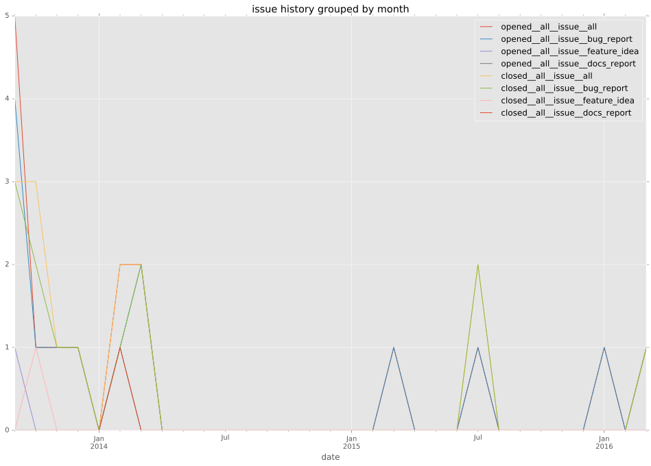
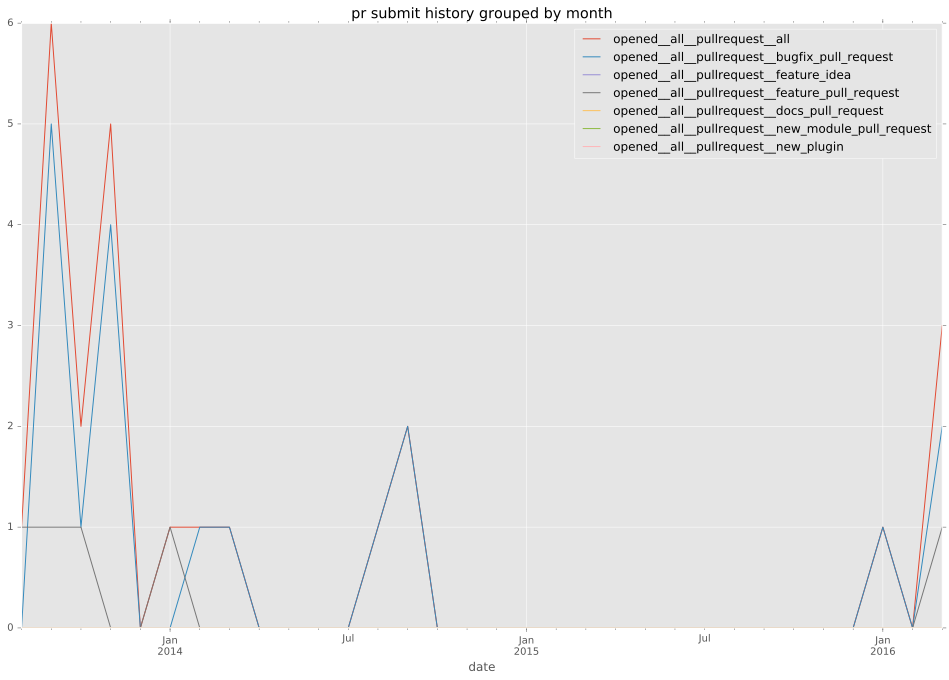

authors
- jimi-c
maintainers
contributors
- bcoca : 2 commits
- gundalow : 1 commits
total issue counts
bugfix pull request: 28
docs report: 2
pullrequest: 40
feature pull request: 11
feature idea: 1
issue: 17
bug report: 15
issue history

pullrequest history

days open by issue type
feature pull request
count: 17
std: 169.206778303
min: 0
max: 696
median: 6.0
mean: 62.9411764706
all
count: 77
std: 90.968531661
min: 0
max: 696
median: 0.0
mean: 23.8311688312
pullrequest
count: 0
std: nan
min: nan
max: nan
median: nan
mean: nan
docs report
count: 2
std: 2.82842712475
min: 0
max: 4
median: 2.0
mean: 2.0
bugfix pull request
count: 43
std: 54.3175010393
min: 0
max: 356
median: 0.0
mean: 12.8837209302
feature idea
count: 1
std: nan
min: 32
max: 32
median: 32.0
mean: 32.0
issue
count: 0
std: nan
min: nan
max: nan
median: nan
mean: nan
bug report
count: 14
std: 31.5344744196
min: 0
max: 120
median: 0.0
mean: 12.5
closures grouped by total days open